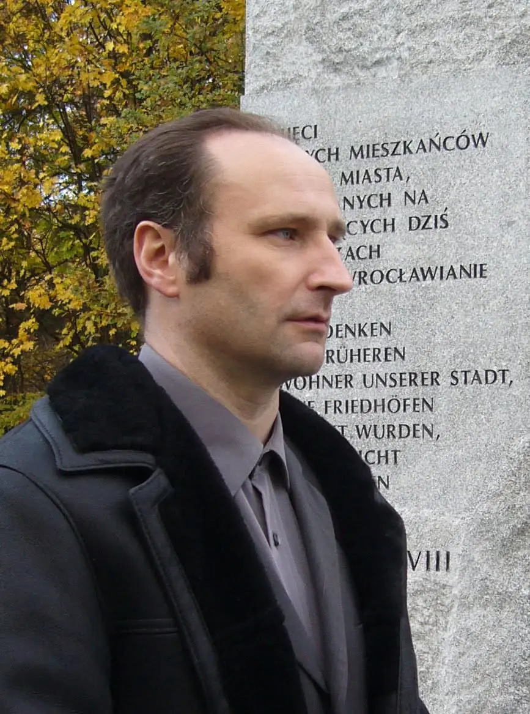
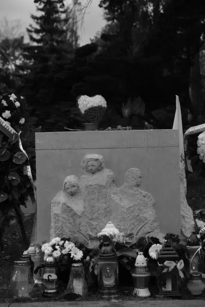
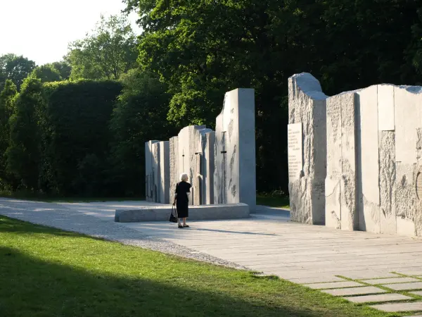
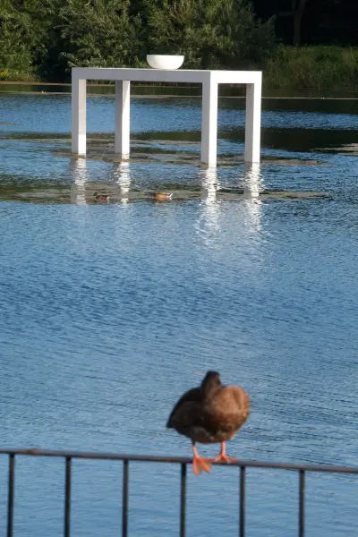

O twórcy

Tomasz Tomaszewski jest rzeźbiarzem. Projektuje nagrobki artystyczne, pomniki i kompozycje upamiętniające, myśląc o trwałości, proporcji i znaczeniu dzieła.
Jest autorem m.in. Pomnika Wspólnej Pamięci we Wrocławiu, pomnika gen. Stanisława Maczka w Bredzie oraz nagrobka Kornela Morawieckiego na warszawskich Powązkach.
Każde upamiętnienie projektuje indywidualnie, z szacunkiem do miejsca i historii, którą ma przechowywać.
Realizacje
Realizuję nagrobki, pomniki, meble artystyczne i małe formy rzeźbiarskie. Kliknij kategorię, aby zobaczyć galerię.

Nagrobki



Pomniki



Meble artystyczne

Oferta
Projektuję i wykonuję na zamówienie:
Nagrobki
Nagrobki artystyczne, rzeźba nagrobna, płaskorzeźby i epitafia, projektowane indywidualnie dla rodziny i miejsca.
Pomniki
Pomniki, tablice pamiątkowe i kompozycje upamiętniające dla instytucji, miast i inwestorów.
Meble artystyczne
Unikatowe meble i obiekty użytkowe, w których forma rzeźbiarska łączy się z funkcją.
Małe formy rzeźbiarskie
Rzeźby kameralne do wnętrz, statuetki na zamówienie, nagrody dla firm i instytucji oraz rzeźby na prezent.
Każde zamówienie zaczyna się od rozmowy. Poznaję historię, którą dzieło ma opowiadać, i oczekiwania zamawiającego. Następnie dobieram formę, proporcje i materiał do miejsca, w którym dzieło stanie, i pilnuję jakości wykonania aż do montażu.
Współpraca z kamieniarzami
Realizacje wykonuję we współpracy ze sprawdzonymi zakładami kamieniarskimi. Przy nagrobku Kornela Morawieckiego współpracowałem z firmą Granity Skwara, współpracuję też z zakładem granitowym ze Strzegomia.
Dla zakładów kamieniarskich
Jeśli prowadzisz zakład kamieniarski, a Twój klient chce nagrobka z rzeźbą, płaskorzeźbą lub nietypową formą, zapraszam do współpracy. Przygotuję projekt i wykonam elementy rzeźbiarskie, a Twój zakład zajmie się wykonaniem i montażem.
Najczęstsze pytania
Odpowiedzi na pytania, które zadają najczęściej rodziny i inwestorzy. Jeśli nie ma tu Twojego pytania, napisz lub zadzwoń.
Jak wygląda zamówienie nagrobka artystycznego?
Zaczynamy od rozmowy o osobie, którą chcemy upamiętnić, o miejscu i o oczekiwaniach rodziny. Na tej podstawie przygotowuję projekt. Po jego akceptacji nagrobek powstaje we współpracy z zakładem kamieniarskim, aż do montażu na cmentarzu.
Ile kosztuje nagrobek z rzeźbą?
Cena zależy od wielkości nagrobka, rodzaju kamienia i zakresu prac rzeźbiarskich. Każdą realizację wyceniam indywidualnie, po rozmowie i wstępnym projekcie.
Ile trwa realizacja?
Czas zależy od skali projektu i dostępności kamienia. Orientacyjny termin podaję razem z wyceną.
Z jakiego kamienia wykonuje Pan nagrobki?
Najczęściej z granitu, np. strzegomskiego, a także z marmuru lub piaskowca. Kamień dobieram do projektu, miejsca i warunków, w jakich będzie stał.
Czy można umieścić na nagrobku płaskorzeźbę lub elementy figuralne?
Tak. Płaskorzeźba i elementy figuralne to jedna z moich specjalności, czego przykładem jest nagrobek Kornela Morawieckiego na Powązkach.
Czy pomaga Pan w formalnościach na cmentarzu?
Tak, pomagam przygotować projekt do akceptacji przez zarząd cmentarza. Na cmentarzach zabytkowych, np. na Powązkach, projekt może wymagać uzgodnień z konserwatorem zabytków.
Czy realizuje Pan zamówienia w całej Polsce?
Tak. Moje realizacje stoją m.in. we Wrocławiu, w Warszawie i w Bredzie w Holandii.
Kontakt
Jeśli myślisz o upamiętnieniu bliskiej osoby lub planujesz pomnik, napisz lub zadzwoń. Porozmawiamy spokojnie o Twoich potrzebach.